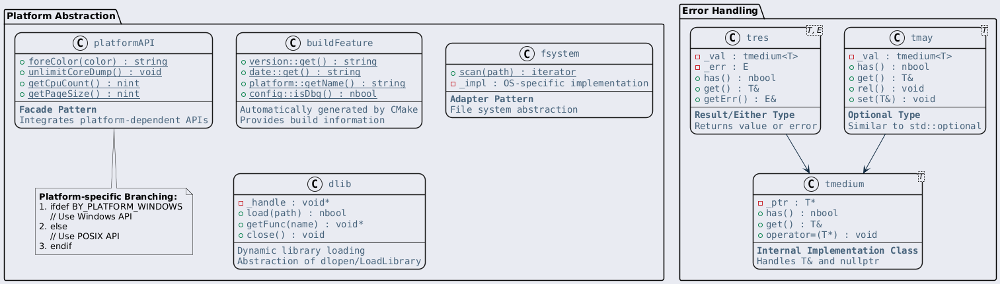
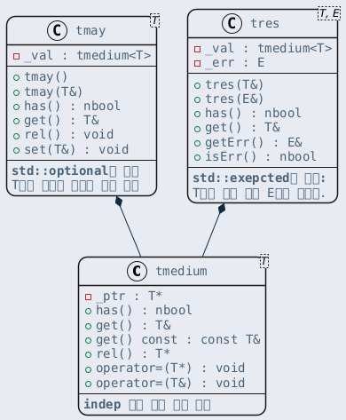

Indep 모듈은 Byeol 프로젝트의 최하위 계층으로, 플랫폼 종속적인 기능을 추상화합니다. 이 모듈의 핵심 목표는 Windows, POSIX 계열 운영체제 등 다양한 플랫폼에서 동일한 API를 제공하는 것입니다. Adapter 패턴을 사용하여 플랫폼별 차이를 감추고 일관된 인터페이스를 제공합니다.
또한 std::optional, result와 같은 에러를 같이 표현할 수 있는 클래스 템플릿을 제공합니다.
indep 모듈의 주요 클래스:

Byeol의 아키텍처 규칙에 따라, 플랫폼 종속적인 코드(#ifdef 조건부 컴파일 등)는 반드시 Indep 모듈에만 존재해야 합니다. Indep 보다 상위의 모듈에서는 OS에 대한 조건부 컴파일이나 플랫폼별 분기를 사용하지 않습니다.
Early-return 패턴과 에러 처리
Byeol은 프로젝트 전체적으로 early-return 패턴을 적용하고 있습니다. 이는 코드의 흐름을 알기 쉽게 해주며 block 문 depth를 줄여주는 이점이 있어요.
단점이라면 if(checks) return res;와 같은 식으로 사용하기 때문에 if만 보고 이 코드가 branching을 위한 if인지 아니면 return하려고 하는 if인지 구분이 되지 않는다는 점과 if(checks) 뒤에 블록문이 오게 되는 경우 가독성이 떨어진다는 점이에요.
다음과 같은 코드를 보면 좀 체감이 될 거예요.
@style: language-cpp verified
str me::eval(const args& a) {
std::string key = _makeKey(a);
if(key.empty()) {
BY_E("key is empty");
return tstr<obj>();
}
if(_isSelfMaking(key)) {
BY_E("error: you tried to clone self generic object.");
return tstr<obj>();
}
if(!_cache.count(key))
_makeGeneric(key, params::make(_paramNames, a));
return _cache[key];
}
WHEN 매크로
WHEN 매크로는 이 부분을 해결하는 것으로 WHEN 은 early-return 패턴 시에만 사용됩니다. 또한 90% 이상의 early-return은 에러 발견시 로그를 찍고 에러 값을 내보내는 것 뿐이라는 것에 착안해서 그 2가지 과정을 한 줄에 표현할 수 있도록 chaining을 지원합니다.
결과 다음과 같이 코드가 간략해지고 if의 목적이 명확해져요.
@style: language-cpp verified
str me::eval(const args& a) {
std::string key = _makeKey(a);
WHEN(key.empty()).err("key is empty").ret(tstr<obj>());
WHEN(_isSelfMaking(key)).err("error: you tried to clone self generic object.").ret(tstr<obj>());
if(!_cache.count(key)) _makeGeneric(key, params::make(_paramNames, a));
return _cache[key];
}
WHEN 매크로 주요 API
WHEN 매크로는 조건이 참일 때 체이닝 가능한 헬퍼 객체를 반환합니다. 이 객체는 다음 메서드들을 제공합니다:
.err(fmt, ...): 에러 로그를 출력하고 자기 자신을 반환 (체이닝 가능).ret(value): 주어진 값을 반환하며 함수를 종료
따라서 WHEN(condition).err("msg").ret(value)는 condition이 참일 때만 에러를 로깅하고 value를 반환합니다. 조건이 거짓이면 아무 동작도 하지 않고 다음 코드로 진행됩니다.
WHEN 매크로는 프로젝트 내에서 아주 빈번하게 사용되므로 잘 파악해 두면 좋아요.
tmay 클래스
tmay 클래스는 값으로 반환하는 함수에 대해 속도가 느린 exception을 사용하지 않고도 에러임을 알려주는 클래스입니다. std::optional<T>과 거의 동일합니다. API look을 프로젝트 컨벤션에 맞춘 것에 가깝습니다.
정상동작일 경우 tmay 의 생성자로 값을 T&로 넘기면 됩니다. 에러상황일 경우 기본 생성자 tmay<T>()를 사용하면 됩니다. 내부적으로 tmedium 클래스를 사용하여 값의 유무를 추적합니다. tmedium 은 값을 저장하는 중간 계층으로, T&와 nullptr 모두를 받을 수 있는 유연한 인터페이스를 제공합니다.
has() 나 get(), rel(), set() 함수를 제공하는데, 이는 프로젝트 전반적으로 많이 사용되는 네이밍 컨벤션입니다.
사용 예시
tmay 는 에러를 반환할 수 있는 함수의 반환 타입으로 사용됩니다:
@style: language-cpp verified
tmay<int> divide(int a, int b) {
if (b == 0)
return tmay<int>(); // 에러 상황
return tmay<int>(a / b); // 정상 값 반환
}
// 사용 시:
auto result = divide(10, 2);
if (result.has()) {
int value = result.get(); // 5
} else {
// 에러 처리
}
tres 클래스
tmay, tres, tmedium의 관계:

tres 클래스는 tmay 와 동일하나, 에러일 경우, 원하는 에러 타입을 갖도록 정의할 수 있습니다. 예를들어 tmay는 에러인지 아닌지만 알 수 있지만, tres<A, std::string>으로 정의하면 에러일 경우, 어떤 에러인지 메시지도 알 수 있도록 만들 수 있습니다. 이는 Result 타입 또는 Either 타입으로 알려진 idium입니다.
사용 예시
@style: language-cpp verified
tres<int, std::string> parseNumber(const std::string& str) {
if (str.empty())
return tres<int, std::string>("입력이 비어있습니다");
try {
int num = std::stoi(str);
return tres<int, std::string>(num);
} catch(...) {
return tres<int, std::string>("숫자로 변환할 수 없습니다");
}
}
// 사용 시:
auto result = parseNumber("123");
if (result.has()) {
int value = result.get();
} else {
std::string error = result.getErr(); // 에러 메시지 확인
}
platformAPI 클래스
platformAPI 클래스는 단발성으로 호출되는, 플랫폼 종속적인 API들을 독립적으로 제공하는 일종의 완충작용을 합니다. Facade 패턴을 사용하여 복잡한 플랫폼별 API들을 단순한 인터페이스로 제공합니다.
예를들면 텍스트 출력시 색깔을 입히려면 posix 계열 플랫폼에서는 ANSI escape sequence를 사용하지만 윈도우에서는 WINAPI를 사용해야 합니다. 이렇게요.
@style: language-cpp verified
#ifdef _LINUX
cout << "\x1B[0;34m"; // blue
#else _WINDOWS
SetConsoleTextAttribute(GetStdHandle(STD_OUTPUT_HANDLE), BLACK << 4 | BLUE);
#endif
cout << "some message\n";
이때 이 diff를 foreColor() 라는 함수로 잘 감싸면 사용하면,
@style: language-cpp verified
cout << foreColor(LIGHTGRAY) << "(" << foreColor(YELLOW) << _encodeNewLine(rightName)
<< foreColor(LIGHTGRAY) << ")";
와 같이 사용하면 플랫폼 독립적인 코드를 작성할 수 있죠. platformAPI는 이러한 함수들을 제공합니다.
buildFeature 클래스
buildFeature 클래스는 CMake에 의해서 자동으로 생성되는 buildInformation.hpp 에 정의된 정보를 반환하는 클래스입니다. 절대 수동으로 값을 변경해서는 안됩니다.
빌드 일시, 버전, 빌드한 OS, 바이너리 타입에 대한 정보를 갖습니다. buildInformation.hpp에 값의 원본이 #define으로 정의되어 있으므로, 필요하다면 이를 사용해도 되죠. #ifdef시에도 종종 사용되니 참고하세요.
@style: language-cpp verified
if(buildFeature::config::isDbg()) // debug binary일때만 뭔가 하고 싶습니다:
platformAPI::unlimitCoreDump();
// 혹은, ifdef를 쓸 수도 있어요.
#ifdef BY_BUILD_PLATFORM_IS_WINDOWS
...
#endif
앞서 언급했듯 Byeol의 아키텍처는 플랫폼 종속적인 코드는 반드시 Indep 모듈에 속해야 합니다. 따라서 Indep 보다 상위의 모듈에서 함부로 OS에 대한 #ifdef의 조건부 컴파일이나 getName() 을 사용해서 코드를 branch 하는 건 권장하지 않습니다.
파일 시스템 - fsystem 클래스
fsystem 클래스는 지정한 폴더에서 파일을 재귀적으로 탐색하는 간단한 클래스입니다. 윈도우와 posix 계열 운영체제에서 모두 사용가능한 플랫폼 독립적인 API를 제공합니다. 핵심 API는 iterator 클래스를 통해 이뤄집니다.
사용 예제는 아래와 같습니다.
@style: language-cpp verified
auto e = fsystem::find("../your/path");
while(e.next()) { // 모든 파일을 탐색하면 false를 반환한다.
const std::string& path = *e; // 찾은 파일의 경로
if(*e == "../your/path/child/helloWorld.cpp") // 항상 상대경로를 사용한다.
doSomething(e->getDir()); // 찾은 파일의 folder 경로를 반환한다.
}
항상 파일만을 iterate 합니다. 빈 폴더가 있다면 해당 폴더는 iterate시 skip 됩니다.
cpIter 클래스
cpIter 클래스는 문자열에 대해서 codepoint 기반의 iteration을 담당합니다. 주로 nStr 에서 UTF8 unicode와 같은 multibyte 문자열을 순회할 때 사용합니다. Bidirectional Iterator 패턴을 구현하여 정방향과 역방향 순회를 모두 지원합니다.
일반적인 iterator 답게, 전위 증가 및 후위증가연산자, 역참조 연산자, bool 형변환 연산자 등을 지원합니다. cpIter 를 생성할때 순회할 문자열과 함께 기본 iteration의 방향을 지정할 수 있습니다.
cpIter 생성시 입력한 방향은 iter 자체의 기본 방향과 초기 위치를 정의한 것입니다. reverse = true로 argument로 주면 cpIter 는 문자열 끝에서 역방향으로 출발합니다. 그러나 이때 stepBackward()나 stepForward()를 명시적으로 호출하면, 이 기본 방향과 관계없이 해당 방향으로 전진합니다.
STL과 마찬가지로 begin은 첫번째 원소를 가리키지만, end는 마지막 원소의 다음 위치를 가리킵니다. (past-the-end) 따라서 역방향 순회시에는 먼저 next()를 해야만 합니다.
기본 사용 예제 (정방향 순회)
먼저 간단한 정방향 순회 예제입니다:
@style: language-cpp verified
std::string src = "abc🏁"; // UTF8에서 🏁는 4바이트로 표현되지만 1개의 codepoint다.
cpIter e(src); // 기본은 정방향, 첫 번째 문자를 가리킨다.
while(e) { // iterator가 유효한 동안
std::cout << *e << " "; // 현재 codepoint 출력
++e; // 다음 codepoint로 이동
}
// 출력: a b c 🏁
역방향 순회 예제
@style: language-cpp verified
std::string src = "abcd🏁efg"; // UTF8에서 🏁는 3개의 character로 표현된다.
cpIter e4(src, true); // 기본 iteration 을 역방향으로 정의한다. 이때 마지막 원소의 다음 위치를 가리킨다.
while(*e4 != "") // 현재 end 위치에 있으므로, 이때는 ""가 반환된다.
++e4; // e4.next()를 호출한 것과 같다. 이때 기본 iteration 방향인 역방향으로 순회한다.
// 하지만 실제로 이 코드는 한번도 실행되지 않는다.
ASSERT_EQ(*e4, "");
std::string expects[] = {"g", "f", "e", "🏁", "d", "c", "b", "a"};
for(int n = 0; n < 8; n++) {
e4.stepBackward(1); // 명시적으로 방향을 지정해서 iterator를 순회한다. e4의 방향과 관계없이 무조건 역방향으로 순회한다.
// 역방향시에는 이처럼 step을 먼저해야한다.
ASSERT_EQ(*e4, expects[n]);
}
동적 라이브러리 로딩 - dlib 클래스
dlib 클래스는 dynamic loading for library의 약자입니다. 플랫폼 독립적인 동적 로딩을 담당합니다. 라이브러리의 메모리 적재, 원하는 함수을 찾아 함수포인터로 변환할 수 있습니다.
다음과 같이 사용합니다:
- dlib 객체를 생성한다.
- 로딩할 라이브러리의 위치를 지정한다.
- 함수명을 통해 원하는 함수를 찾아 함수포인터로 받는다.
tmay 를 사용하므로 tmay 를 사전에 익혀두는 걸 권장합니다.
dlib 은 RAII idiom으로 구현되어 있습니다. 해당 인스턴스가 소멸될때 외부로 반환된 함수포인터는 사용할 수 없게 되죠.
사용예제
다음 예제는 동적 라이브러리를 로드하고 함수를 호출하는 전체 과정을 보여줍니다. 코드에서 rel()은 리소스를 명시적으로 해제하는 함수로, 에러 발생 시 dlib 객체를 정리한 후 반환하기 위해 comma 연산자 (rel(), false)를 사용합니다:
@style: language-cpp verified
dlib lib = dlib(path); // 1번과 2번을 동시에 한다.
auto res = lib.load(); // path로 지정한 so/dll 의 로딩을 시도하며, 에러 발생시 true를 반환한다.
WHEN(res) .err("couldn't open %s slot: %d", path, res.get()).ret((rel(), false));
// rel()로 리소스를 먼저 해제하고, comma 연산자로 false를 반환
typedef void (*entrypointFunc)(bicontainable*);
constexpr const nchar* ENTRYPOINT_NAME = "byeol_bridge_cpp_entrypoint";
auto info = lib.accessFunc<entrypointFunc>(ENTRYPOINT_NAME); // 결과는 tmay로 받는다.
WHEN(!info.has()) // tmay의 has()로 결과 체크 중
.err("couldn't access entrypoint of %s slot: %d", path, info.getErr()).ret((rel(), false));
(*info)(&tray); // 정상적으로 함수를 가져오면, 호출이 가능하다.
// lib이 소멸되면서 자동으로 메모리가 해제된다.
end 클래스
end 클래스는 코드 실행을 지연시킵니다. 다른 언어에서 defer와 같은 키워드와 같은 역할입니다. RAII 기반의 Scope Guard 패턴을 구현하여, 스코프 종료 시 자동으로 정리 작업을 수행합니다.
사용 예시
RAII 패턴을 활용하여 스코프 종료 시 특정 코드를 실행합니다:
@style: language-cpp verified
void processFile(const std::string& path) {
FILE* fp = fopen(path.c_str(), "r");
end cleanup([&]() {
if (fp) fclose(fp); // 스코프 종료 시 자동으로 파일 닫기
});
// 파일 처리 작업...
// 함수가 어떤 경로로 종료되든 cleanup이 실행됨
}
Side Func
보통의 개발자라면 편의함수를 만들어 DRY를 지키려고 노력할 겁니다. 예를들면 다음과 같은 상황이죠.
const node* promote(const node& it) const;
const node* promote(const node* it) const {
if(it == nullptr) return nullptr;
return promote(*it);
}
byeol에서는 이 편의함수를 Side Func 이라고 부르고 있습니다. 의미는 동일해요. 타입이 다른 인자를, 살짝 가공해서 메인이 되는 함수로 위임될 수 있도록 도와주는 함수입니다. 이 side func을 구현할때 BY_SIDE_FUNC 매크로를 사용해서 한줄로 표현합니다.
const node* promote(const node& it) const;
const node* promote(
const node* it)
const BY_SIDE_FUNC(promote);
#define BY_SIDE_FUNC(...)
Side function macros for safe pointer operations
Definition sideFunc.hpp:24
다음 문서: clog 모듈 - 로깅 시스템